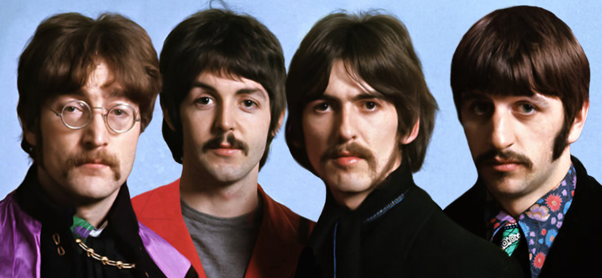
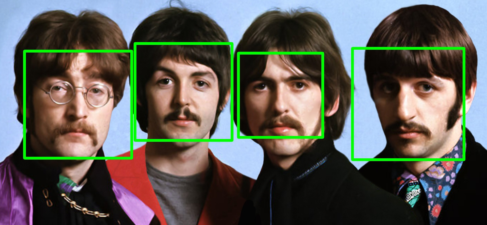
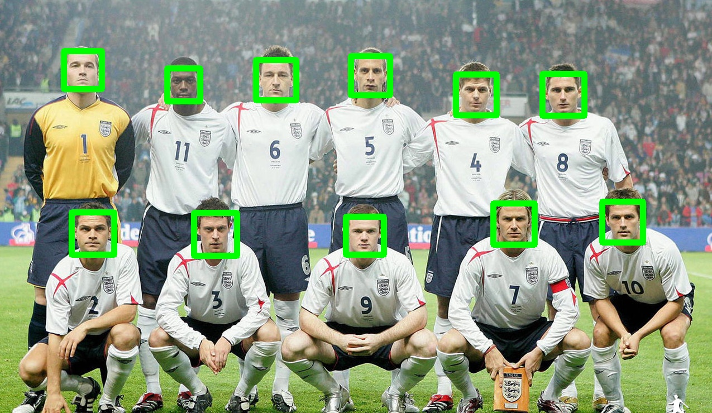

Using the open CV library to detect faces in images using the Haar Cascade technique.
import cv2
import sys
input_image = sys.argv[1]
output_image = sys.argv[2]
casc_path = 'haarcascade_frontalface_default.xml'
# Load the haar classifier
faceCascade = cv2.CascadeClassifier(casc_path)
# Convert image colours
image = cv2.imread(input_image)
gray = cv2.cvtColor(image, cv2.COLOR_BGR2GRAY)
# Detect faces in the image
faces = faceCascade.detectMultiScale(
gray,
scaleFactor=1.1,
minNeighbors=5,
minSize=(150, 150),
flags = cv2.cv.CV_HAAR_SCALE_IMAGE
)
print "Found {0} faces!".format(len(faces))
# Draw a rectangles
for (x, y, w, h) in faces:
cv2.rectangle(image, (x, y), (x+w, y+h), (0, 255, 0), 10)
cv2.imwrite(output_image, image)
cv2.imshow("Faces found", image)
cv2.waitKey(0)
Some examples:
  Download code here.